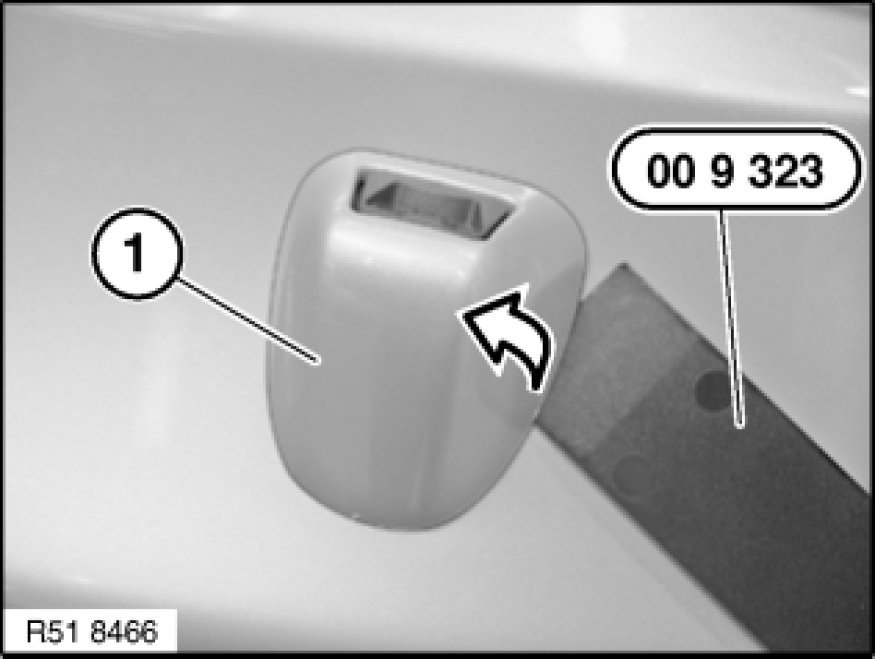
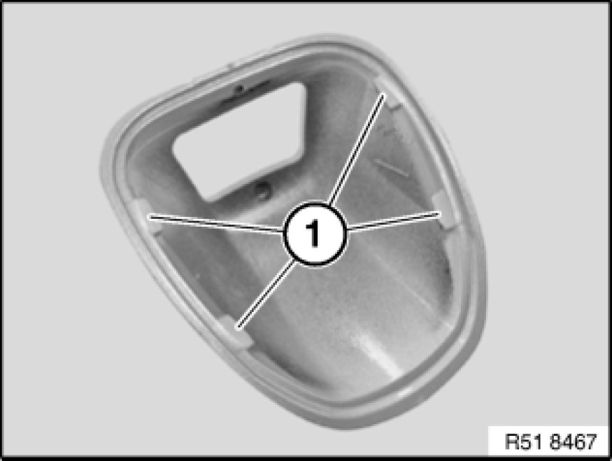

Headlamp Washer Spray Nozzle: Service and Repair
51 11 X03 - Removing and installing/replacing cover cap on spray nozzle for headlight washer system on left or right

Special tools required:

Important!
Risk of damage!
When working on trim panel components, make sure that the sensitive surfaces are not scratched or damaged.

Release cover cap (1) with special tool 00 9 323 from catches and remove towards top.

Installation Note:
Catches (1) must not be damaged